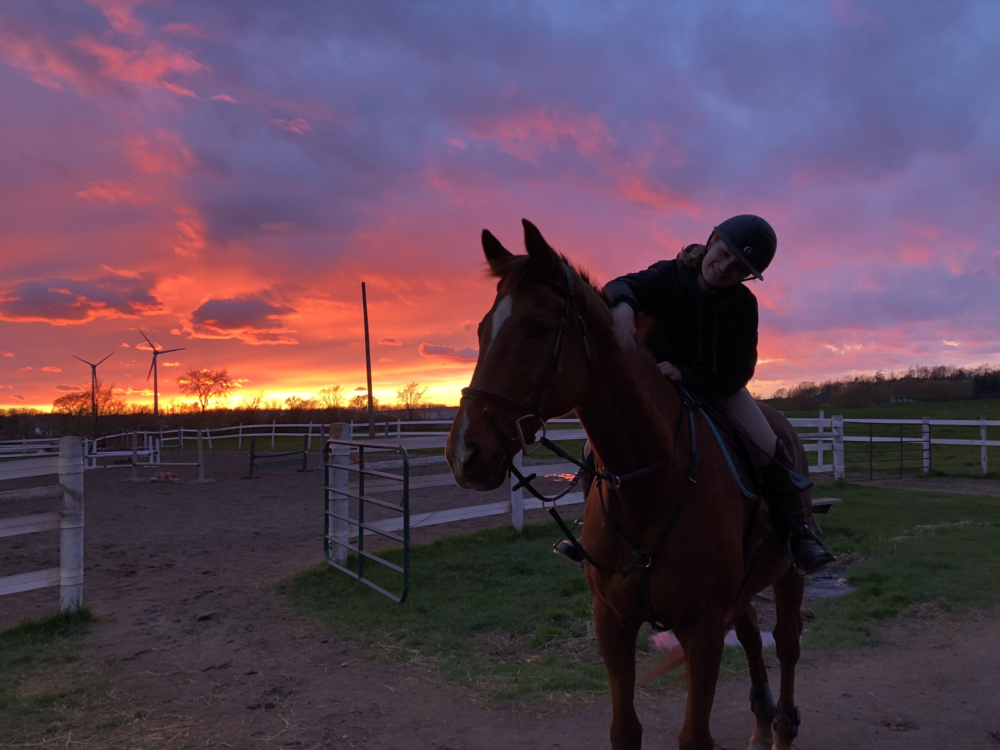

See more information on..
Most of us who own horses talk about their “therapeutic” value. Being in the barn grooming, feeding, and otherwise caring for our horses reduces stress,lowers blood pressure, and improves overall health. Yet, it is the companionship with our equine partners that is the foundation of our growth in relationship to these animals.Being with our horses is “therapy.” 
For more information about above quote and information on horses and mental healt. Check out the following. Link for more Information